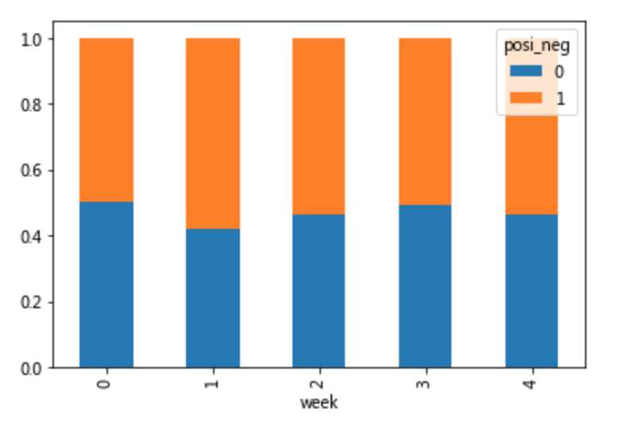

5.9 高级处理-交叉表与透视表
学习目标
- 目标
- 应用crosstab和pivot_table实现交叉表与透视表
- 应用
- 股票的每日涨跌跟星期几关系大
5.9.1 交叉表与透视表什么作用
探究股票的涨跌与星期几有关？
以下图当中表示，week代表星期几，1,0代表这一天股票的涨跌幅是好还是坏，里面的数据代表比例
可以理解为所有时间为星期一等等的数据当中涨跌幅好坏的比例


5.9.2 使用crosstab(交叉表)实现上图
- 交叉表：交叉表用于计算一列数据对于另外一列数据的分组个数(寻找两个列之间的关系)
- pd.crosstab(value1, value2)
- DataFrame.pivot_table([], index=[])
5.9.3 案例分析
5.9.3.1 数据准备
- 准备两列数据，星期数据以及涨跌幅是好是坏数据
- 进行交叉表计算
# 寻找星期几跟股票张得的关系
# 1、先把对应的日期找到星期几
date = pd.to_datetime(data.index).weekday
data['week'] = date
# 2、假如把p_change按照大小去分个类0为界限
data['posi_neg'] = np.where(data['p_change'] > 0, 1, 0)
# 通过交叉表找寻两列数据的关系
count = pd.crosstab(data['week'], data['posi_neg'])
但是我们看到count只是每个星期日子的好坏天数，并没有得到比例，该怎么去做？
- 对于每个星期一等的总天数求和，运用除法运算求出比例
# 算数运算，先求和
sum = count.sum(axis=1).astype(np.float32)
# 进行相除操作，得出比例
pro = count.div(sum, axis=0)
5.9.3.2 查看效果
使用plot画出这个比例，使用stacked的柱状图
pro.plot(kind='bar', stacked=True)
plt.show()
5.9.3.3 使用pivot_table(透视表)实现
使用透视表，刚才的过程更加简单
# 通过透视表，将整个过程变成更简单一些
data.pivot_table(['posi_neg'], index='week')
5.9.4 小结
- 交叉表与透视表的作用